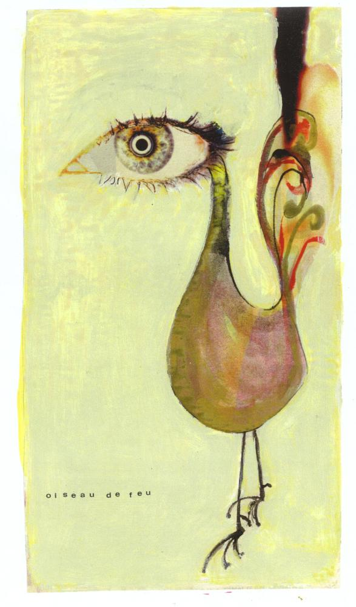

Coq'Art Home page

Coq'Art is the familiar name for the first book on the
Coq proof assistant and its underlying
theory the Calculus of Inductive Constructions , written
by Yves Bertot
and Pierre
Castéran.
Interactive Theorem Proving and Program Development
Coq'Art: The Calculus of Inductive Constructions
Series: Texts in Theoretical Computer Science. An EATCS Series
Bertot, Yves, Castéran, Pierre
2004, XXV, 469 p., Hardcover
ISBN: 3-540-20854-2
Look at Springer site .
Drawing "Oiseau de feu" by courtesy of Michel Mendès France
Coq 8.1
This site has been updated for Coq8.5.
Warning! Some solutions we propose don't work
on versions prior to V8.1gamma.
Please find here a tar file fully compatible with coq8.0 and the printed edition of the book.
New Exercises !
These exercises were written after the release of the book (May 2004).
The solution of some of them (e.g. mergesort
) illustrates new features of Coq. For instance, command
Function and tactic functional induction.
Follow this link
Sources and exercises from the book
This site contains the source of all examples and the solution of
170 over 200 exercises from the book. Some new exercises are still added
to this repository.
For each exercise, we give a solution as a Coq file, together with
some comments if the exercise is difficult, or if the solution presents some
methodological interest. Comments are welcome.
table of contents .
Participation is welcome
Thank you in advance for any comment, alternate solution, or any way to
improve this site.
Errata
Some typos where found after the printing of the book. They are reported
chapter by chapter, after the sources and exercises (look at
this index ).
Many thanks to
Stefan Karrmann for all the remarks he sent to us.
All in a single tar file (gunzipped)
All the examples and exercises on this site are copyright Yves Bertot and Pierre Castéran.
Tutorial on [Co]-inductive types in Coq (V8.1 beta)
Coq Art Gallery
Look at this page
To download Coq
Coq site here
Mail : first name.name@labri.fr